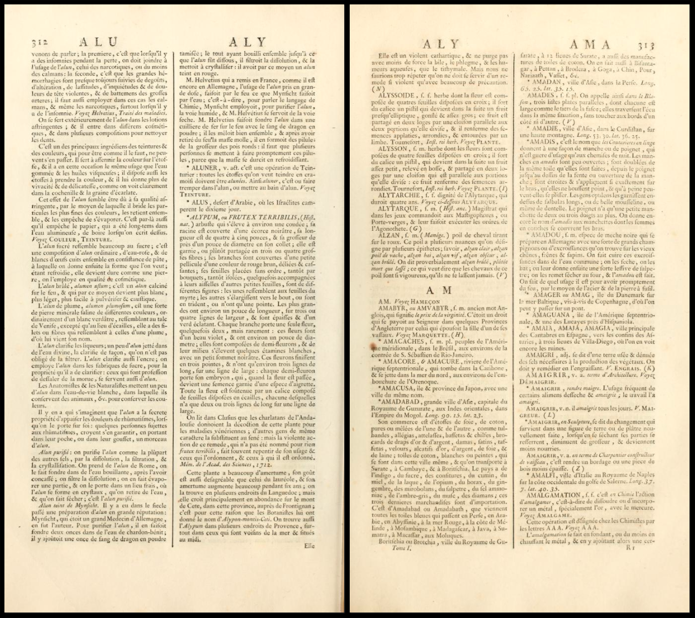
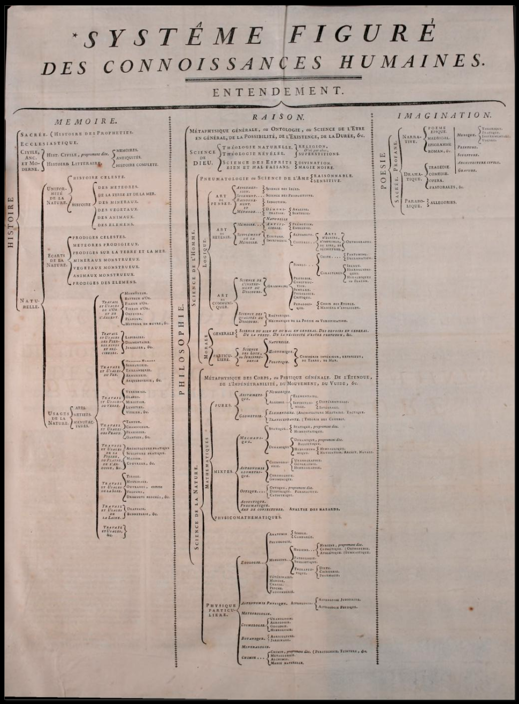
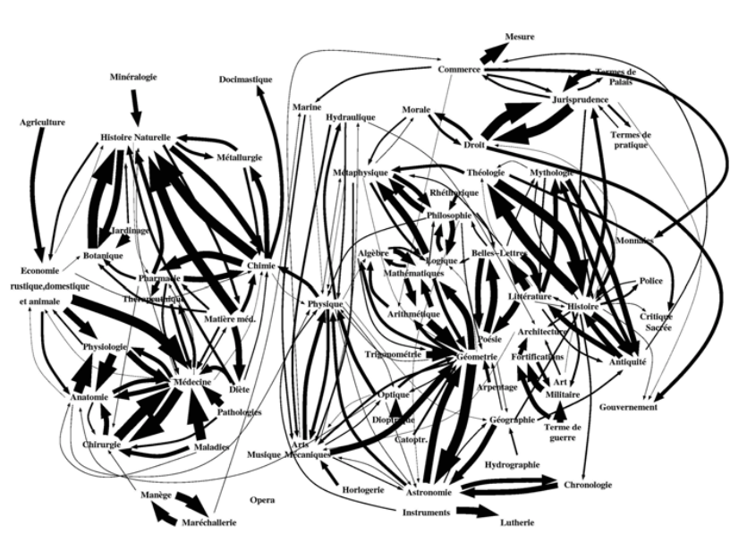
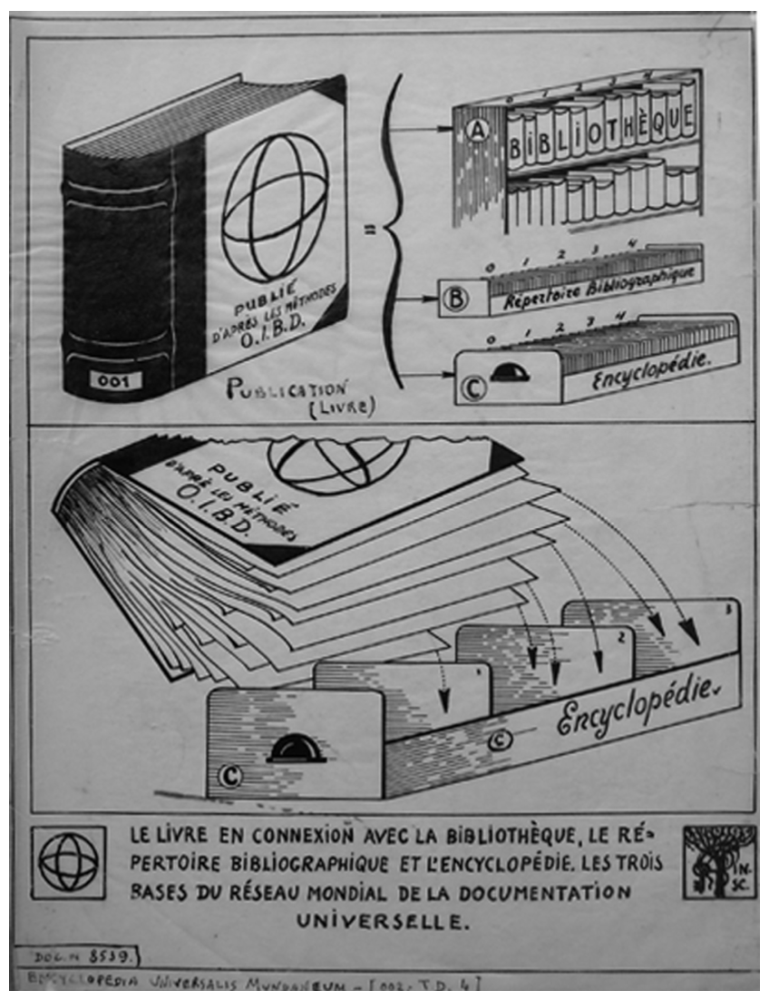
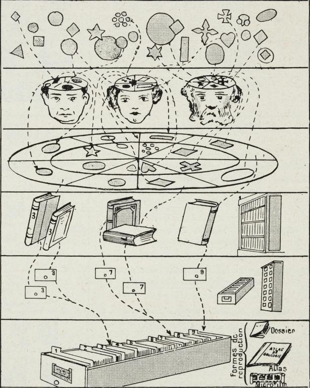
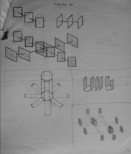
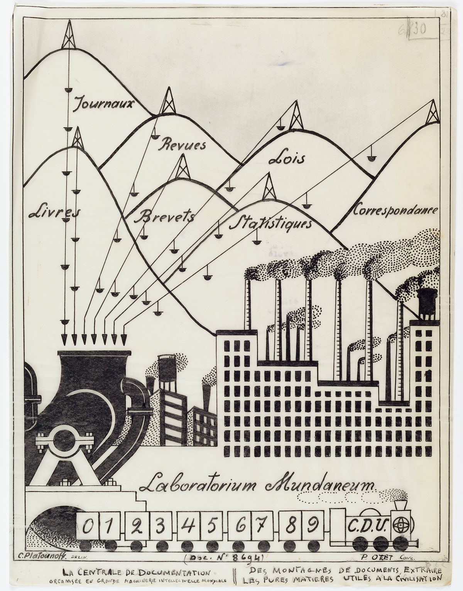

On Interconnection and the Boundary of Documents
✱ It’s a draft.
A document is a container of content objects, which can vary in modality (text, images). Originating with the text What is Text, Really? by Steven DeRose (1990), content objects are what Daniel Rosenberg (2015) calls “information chunks” and what Ted Nelson (1999) calls “content items.” In traditional terms, a paragraph is a content object; a quote within a paragraph is also a content object; a list and a list item are content objects. In other words, content objects vary not only in modality but are distinguished by type.
The concept of interconnection, on which this project is based, denotes the various connections among the content objects of documents. As explained by Nelson (X) connections can be internal or external to a document, stated implicitly or explicitly. For example, phrases such as the example given above or as demonstrated in the image below or as stated previously establish implicit internal connections. Explicit internal connections are content objects that by convention take the form of a footnote or marginal annotations, the content of which can be an elaboration of a term used, an example of something, or a tangent or comment on something. Explicit external connections are inclusions of one document segment into another (what Nelson (1980) coined transclusions) or some other direct connection by way of reference.
There are various terms used to express the idea of interconnection. As Christine Borgman (2015) writes, “[t]he body of relationships among documents is sometimes known as hypertextuality, and in semiotics and literary studies, it is called intertextuality, which are abstract connections, “as in the influence of one text on the meaning of another.” Nelson (2015) calls it intertwingularity which “expresses a philosophical position about cross-connection,” namely that “all subjects and issues are intertwined and intermingled.” Lastly, by example, a data model based on interconnection is one that allows a many-to-many relationship among entities. Entities with many many-to-many relationships form clusters, and clusters can also form many-to-many relationships to other clusters. Further, the connections can be based on (or describe, or establish, or map) various relationship types.
So interconnection here means connected on multiple levels and is used to describe the various relationships among the contents of documents, some of which go beyond the boundary of documents. Mapping these connections creates complex multidimensional structures, and how exactly these are mapped and visualized is shaped by the medium of the document. In what follows, analog and digital systems designed for mapping, visualizing, and accessing content based on interconnection are examined.
Analog and Digital Systems Based on Interconnection
An early analog system developed for mapping and visualizing interconnection is the “compilation of Jewish Oral Law with its rabbinical commentaries” organized according to the Talmud page. Representing centuries of religious discussion, the Talmud:
consists of the core texts, commentaries by various authors […] navigational aids (such as page number, tractate name, chapter number, chapter name) and glosses. Most of these glosses are emendations to the text, while others contain useful (or cryptic) cross-references. (Neumüller transcluded from Ridi (2018))
The image below demonstrates how the Talmud Page is organized.

A Guide to the Layout of a Talmud Page by Joshua Parker
Other analog systems include the Encyclopédie by Denis Diderot and Jean d’Alembert; Paul Otlet’s principles, methods, and model of a global network of documentation; the hypothetical machine the Memex by Vannevar Bush; and Niklas Luhmann’s notecard system based on the Zettelkasten Method. The most prominent example of a digital system is the project Xanadu by Ted Nelson. These all share the conceptualization of documents as nodes that are linked through some mechanism and according to a system. In other words, these are examples of multidimensional structures. In consideration of the scope of this entry, three of the examples given above are examined in more depth:
- Encyclopédie by Denis Diderot and Jean d’Alembert
- The work of Paul Otlet
- Xanadu by Ted Nelson
Encyclopédie is a system of intraconnections (i.e., a closed system of internal connections; intranet). Otlet’s principles, concepts, and models are based on interconnections and emergent structure (i.e., open system of connections). Xanadu by Nelson is also a system of interconnections and emergent structure, but with consideration of the potential of the computer as a universal machine.
1 Encyclopédie by Diderot and d’Alembert
Various information technologies for mapping interconnection (non-)hierarchically were produced in the eighteenth century, ranging from atlases, encyclopedias, dictionaries, and suchlike. A prominent example is the Encyclopédie by Diderot and d’Alembert, which was, as Rosenberg (2015) argues, an innovative system for its time. In its entirety, the Encyclopédie is a system of intraconnections — which is to say, a closed system of cross-references — comprising 28 volumes of 72000 entries by more than 2000 writers. Though the design incorporates ways for external reference, the Encyclopédie was conceived and meant to be used as an independent system.
The alphabetical structure is embedded as running headers throughout the encyclopedia (as seen in the image below), allowing access to content by headword.

Transcluded from Internet Archive
Other examples include annotated diagrams depicting the contents and functioning as a visual index. A tree diagram from the first volume is seen in the image below.

Transcluded from Internet Archive
The textual and diagrammatic ways of mapping structures are hierarchical, as was the convention at the time. However, as Rosenberg explains:
Older encyclopedias were generally organized hierarchically and by subject. Theirs was designed to be navigated by keyword, to allow readers to enter and exit at any useful point. Additionally, their encyclopedia was hypertexted. Articles were linked in a web through a system of renvois or cross-references. The Encyclopédie also offered a hierarchical subject map, echoing the structure of older works, but, in the work of Diderot and d’Alembert, the tree of knowledge was presented as only one of several heuristics. (Rosenberg 2015)
Additionally, as the computer-generated diagram (seen in the image below) elucidate, an underlying structure “implicit in the system of cross-references of the Encyclopédie” (Rosenberg 2015) is a network structure in which there are many-to-many relationships among subjects.

Diagram by Olsen and Blanchard (transcluded from Rosenberg (2015))
There are two significant points the diagram elucidates. First, conceiving knowledge as fundamentally hierarchical is not “paradigmatic of Enlightenment epistemology,” and second, nor is it intrinsic to print. As Rosenberg argues, though the
network diagram would not have been familiar to the generation of the Encyclopedists, the concepts behind it were. They too were thinking about intellectual phenomena in terms of underlying structures and aggregate relationships. (Rosenberg 2015)
In sum:
- Significant to the design of the Encyclopédie:
- A system of intraconnections typographically embedded as links.
- Multiple (non-)hierarchical structures are mapped, both textual and diagrammatic in form, offering multiple ways of accessing content.
2 The Work of Paul Otlet
The work of Paul Otlet — regarded as a pioneer of the field once called documentation that branched into what is now called information science (Le Deuff and Perret 2019) — range from devising the model called Functional Requirements for Bibliographic Records in which entities are linked on multiple levels in the form of a network (Borgman 2015), developing new approaches to organizing and accessing information, establishing theoretical principles of information, to drawing illustrations serving as metaphors of a global network of documents once media other than the book would take precedence (source).
Similar to the Encyclopédie — a project regarded as in response to the eighteenth-century information overload (Rosenberg 2015) — Otlet’s work was in response to the problem of “the enormous growth in the number of publications, specialist congresses, and international exhibitions that began to occur at the end of the nineteenth century”(Manfroid 2013).
As Rayward (1994) formulates it, the problem that Otlet analyzed and explored solutions to was “how most effectively to create, maintain, and change institutional arrangements for collecting, storing, preserving, organizing, retrieving, and disseminating all of the recorded information that is-or will be-needed within society.” With that complex problem at hand, Otlet envisioned new approaches to storing, organizing, and disseminating information accommodating expansive growth and extensive reuse. Some of the most significant aspects of his work are delineated below.
- Conceptualization of text as modular.
- Re-conceptualizing the Book as:
- A global system of linked content objects.
- Based on interconnection and emergent structure.
- Necessity of multidimensional linking of content objects.
- A global system of linked content objects.
Otlet conceptualized text as modular — made up of parts connected to other parts (internal and external to a document). An appropriate system, according to Otlet, must therefore allow and facilitate establishing links between these parts (content objects). In designing such a system, Otlet explored the re-conceptualization of the Book as a global system of documents. As told by Van den Heuvel and Rayward (2011):
In a 1911 lecture on the future of the book and of bibliography, Otlet came back to the idea he had first expressed in 1892 and in subsequent publications: ‘The arbitrary division into lines and pages of the book in its present format, does not at all correspond all with the presentation of ideas’ (p. 291). He envisioned the emergence of a future format of the book in which ‘each intellectual element, in corresponding to a physical element, will create a structure such that any combination of ideas, notions, and facts will be possible.’ He suggested that this process can operate in so mechanical a fashion that in the future, the book will truly become a machine to think with (“machine à penser;” Otlet, 1911, p. 291).
As the illustration below suggests, for Otlet, the development of such a system begins with ripping content objects (representing ideas, notions, facts) from books and collecting each on separate paper cards.
The book in connection with the library, the Bibliographic Repertory and Encyclopedia. The three bases of the Global Network of Universal Documentation”—Dissecting the book to create a card system as an interface to the Global Network of Documentation

Global Network of Universal Documentation (transcluded from Van den Heuvel and Rayward (2011))

The system must, therefore, also be designed to accommodate expansive growth and extensive reuse. For Otlet, this meant the capacity to store content objects by links and metadata and to access the content objects based on those links and metadata. In the image below, Otlet explored a paper card-based system that could establish multidimensional links between content objects.

Multidimensional card system (transcluded from Van den Heuvel and Rayward (2011))
As Otlet writes:
To increase the number of sides, one might well abandon the rectangular form of the card and adopt a polygonal form, an octagon for example. For sorting and systematically selecting the ideas that have been classified hierarchically, the cards are suspended from their centre. The Book as a structure of cards thus takes a quasi-circular form and can rotate. [I]ts structure […] constitutes a Book—for it is still a book—that has abandoned the traditional form of linear text arranged according to a unique plan. It has been transformed in some way into a body with several dimensions, as many dimensions as headings such that different searches using the same graphic elements on the cards are possible. (Otlet transcluded from Van den Heuvel and Rayward (2011))
As Van den Heuvel and Rayward (2011) point out, though the material manifestation of such a paper card system is “impractical for many reasons,” what Otlet is describing is an open system for mapping and accessing content based on the interconnection of subjects. Beyond these experiments with paper cards, Otlet envisioned new approaches to accessing content and new visual representations. For example, in the image below, “Otlet uses the architectural metaphor of the factory to visualize this process” (Van den Heuvel 2017).

Laboratorium Mundaneum (transcluded from Wikimedia Commons)
{kind=link}
Though Otlet was inhibited by the constraints of working with paper-based technologies (e.g., books, paper cards, shelves, cabinets, and desks), he envisioned new ways of organizing and accessing information beyond what Van der Weel (2012) calls the order of the book.
In sum, significant to the work of Otlet: - Conceptualization of text as modular; made up of content objects. - Developed a system based on interconnections; networked information organization based on emergent structure and new ways of linking those content objects. - Explored ways of storing and accessing content objects through experiments with cards and metaphorical visualizations.
3 Xanadu by Ted Nelson
✱ In dev.
References
Borgman CL. Data, Metadata, and Ted. In: Dechow DR, Struppa DC, editors. Intertwingled. Cham: Springer International Publishing; 2015. p. 67–74.
DeRose SJ. What Is Text, Really? Journal of Computing in Higher Education. 1990;1(2):3–26.
Le Deuff O, Perret A. Hyperdocumentation: origin and evolution of a concept. JD. 2019;75(6):1463–74.
Van den Heuvel C. Building Society, Constructing Knowledge, Weaving the Web: Otlet’s Visualizations of a Global Information Society and His Concept of a Universal Civilization. In: Rayward WB, editor. European Modernism and the Information Society: Informing the Present, Understanding the Past. 1st ed. Routledge; 2017
Van den Heuvel C, Rayward WB. Facing interfaces: Paul Otlet’s visualizations of data integration. J. Am. Soc. Inf. Sci. 2011;62(12):2313–26.
Manfroid S, Gillen J, Phillips-Batoma PM. The Archives of Paul Otlet: Between Appreciation and Rediscovery, 1944–2013. Library Trends. 2013;62(2):311–28.
Nelson TH. Literary Machines: The report on, and of, Project Xanadu concerning word processing, electronic publishing, hypertext, thinkertoys, tomorrow’s intellectual revolution, and certain other topics including knowledge, education and freedom. Sausalito, California: Mindful Press; 1980.
Nelson TH. Xanalogical Structure, Needed Now More than Ever: Parallel Documents, Deep Links to Content, Deep Versioning, and Deep Re-Use. ACM Computing Surveys. 1999;31(4):32.
Nelson TH. What Box? In: Dechow DR, Struppa DC, editors. Intertwingled. Cham: Springer International Publishing; 2015. p. 133–50.
Rayward WB. Visions of Xanadu: Paul Otlet (1868–1944) and Hypertext. Journal of the American Society for Information Science. 1994;16.
Ridi R. Hypertext. Knowledge Organization. 2018;45(5):393–424.
Rosenberg D. History Debugged. In: Dechow DR, Struppa DC, editors. Intertwingled. Cham: Springer International Publishing; 2015. p. 91–103.
Van der Weel A. Changing Our Textual Minds: Towards a Digital Order of Knowledge. Manchester University Press; 2012.